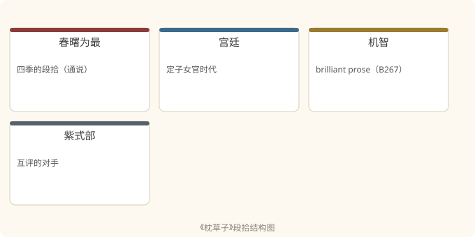

枕草子
一、基本信息
| 作者 | 清少纳言 |
|---|---|
| 成书/出版 | 约993—1000年宫廷期间写作（Britannica 语境）；定本年代通说待核 Sei Shonagon — Encyclopaedia Britannica（百科全书） |
| 国别/地区 | 日本 |
| 时代 | 古代 · 平安时代 |
| 体裁 | 随笔集 |
| 语言 | 日语（王朝文体） |

《枕草子》段拾结构图（主题·结构图）
二、创作背景
Britannica（B267）：'her witty, learned Pillow Book (Makura no soshi) exhibits a brilliant and original Japanese prose style'；'It is also the best source of information on Japanese court life in the Heian period (794–1185)'。
'Those qualities also won her enemies, according to the diary of her contemporary Murasaki Shikibu, who herself declared Sei Shonagon conceited'（紫式部日记称其自负——B267）。
三、内容脉络
段拾式随笔：'春，曙为最'等三百余段（段数通说待核）+ 日记部分 + 和歌（B267：vividly recounted memoirs of her impressions）。
四、主要人物表
| 人物 | 身份 | 说明 |
|---|---|---|
| 清少纳言 | 随笔作者 | 定子女官（B267） |
| 中宫定子 | 皇后 | 服务的对象（B267） |
五、主题与艺术特点
- 'をかし'（有趣）与'あはれ'（哀）的审美分野（通说待核）。
- 平安宫廷生活的最佳史料（B267）。
- 与《源氏物语》的双峰（通说——两人互评见 B267）。
六、影响与评论
- Britannica：'brilliant and original Japanese prose style'（B267）。
Sei Shonagon — Encyclopaedia Britannica（百科全书） - 英译：Arthur Waley (1929)、Ivan Morris (1967)（B267）。
Sei Shonagon — Encyclopaedia Britannica（百科全书）
七、阅读建议
难点
- 平安朝称谓与名物。
- '段'的分立逻辑。
- 周作人译本（上海译文出版社《枕草子》，通说待核）。
- 英译（Ivan Morris 版）。
先读'春曙为最'段 → 与《源氏物语》对照。
八、待核实
- 段落数核对。
- 周作人译本信息核对。
- 与紫式部的互评（B267 已载）展开核对。
本页主要来源
清少纳言的其他收录作品：枕草子